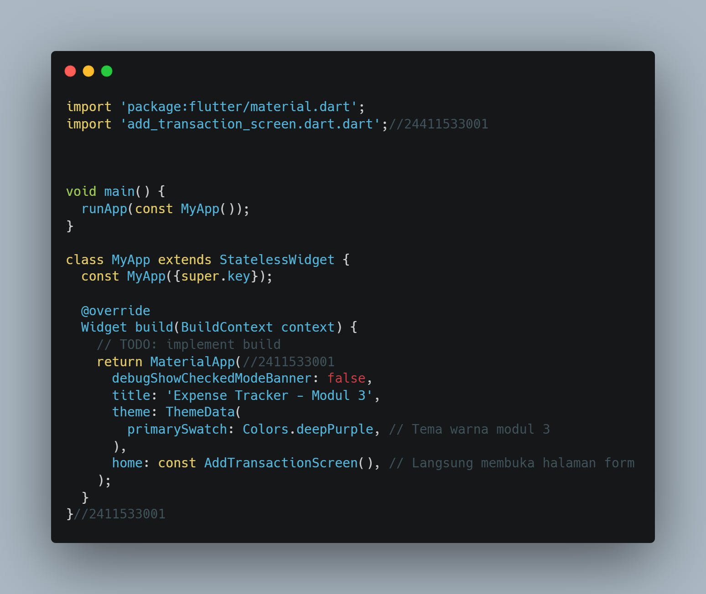
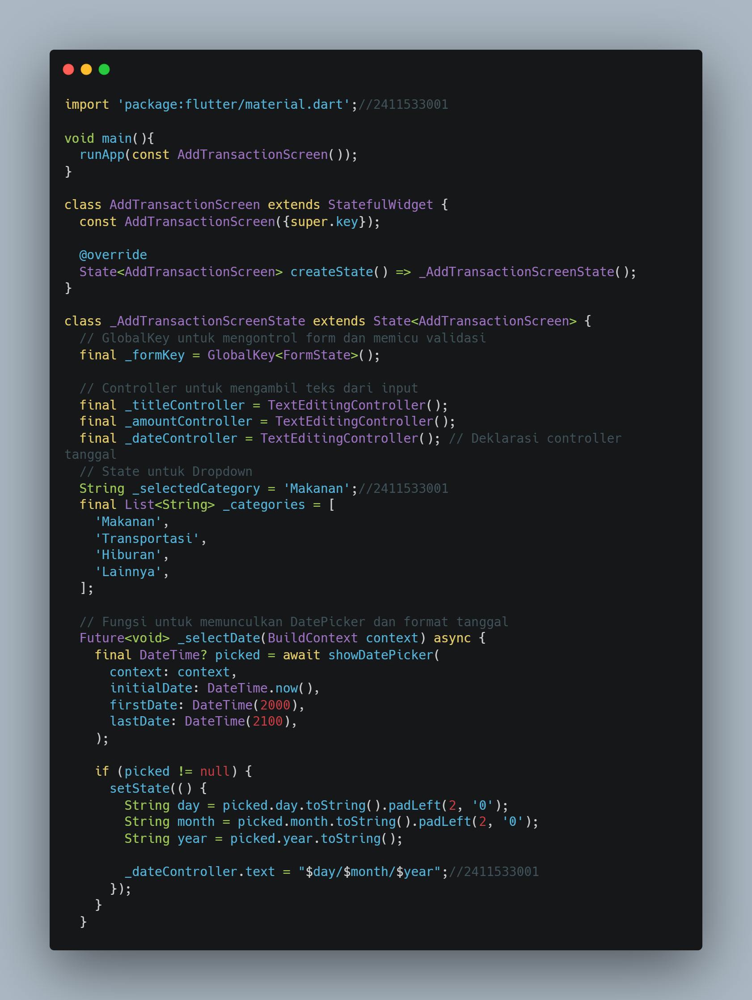

📖 BAB I: Pendahuluan
1.1 Tujuan Praktikum
Praktikum ini memiliki beberapa tujuan utama dalam pengembangan antarmuka pengguna, yaitu:
- Menangkap data teks dari pengguna menggunakan
controller. - Menerapkan widget dropdown statis untuk pilihan kategori.
- Melakukan validasi input guna mencegah pengiriman data kosong atau format yang salah.
1.2 Alat dan Lingkungan Kerja
📖 BAB II: Dasar Teori
Dalam membangun formulir pada Flutter, terdapat beberapa komponen utama yang menjadi pilar:
- Form & GlobalKey: Widget
Formberfungsi sebagai wadah utama yang mengelompokkan input, sedangkanGlobalKeydigunakan untuk memvalidasi banyak input tersebut secara sekaligus. - TextFormField: Merupakan kolom teks yang telah mendukung sistem validasi terintegrasi di dalamnya.
- TextController: Pengendali (
TextEditingController) yang bertugas membaca teks yang diketikkan oleh pengguna secara real-time. - Validasi: Mekanisme untuk mencegah masuknya data yang tidak sesuai format sebelum disimpan ke sistem. Fungsi validator akan mengembalikan nilai
nulljika data valid, atau nilaiStringberupa pesan error merah jika tidak valid.
🛠️ BAB III: Langkah Kerja & Penyelesaian Tugas
Pada praktikum ini, dibangun sebuah halaman "Catat Transaksi Baru". Sesuai instruksi latihan/tugas modul, aplikasi dimodifikasi untuk menambahkan input Tanggal Transaksi sebelum tombol simpan, menggunakan fungsi showDatePicker dan menerapkan validasi wajib diisi.
📌 3.1 Struktur File lib/main.dart
File ini adalah titik masuk utama aplikasi yang mengatur tema dan memanggil halaman form.

📌 3.2 Struktur File lib/add_transaction_screen.dart
File ini berisi StatefulWidget yang menangani Form, Controller, Dropdown, dan fungsi pemilih tanggal (DatePicker) yang ditugaskan.

.png)
.png)
.png)
Setelah seluruh struktur kode diselesaikan, output yang akan dihasilkan adalah sebagai berikut

✅ BAB IV: Kesimpulan
Melalui praktikum ini, pengembangan antarmuka pengisian data (form) pada Flutter berhasil dipahami dan diimplementasikan secara interaktif. Penggunaan widget Form yang dikombinasikan dengan GlobalKey memudahkan proses validasi seluruh input lapangan (teks, angka, kategori, dan tanggal) secara serentak.
Untuk menyelesaikan tugas tambahan berupa input tanggal, implementasi terbaik dilakukan dengan memanggil pustaka bawaan showDatePicker. Pendekatan ini digabungkan dengan TextFormField berstatus readOnly: true agar input lebih konsisten, aman dari salah ketik (typo), serta menjaga pengalaman pengguna (UX) tetap rapi karena keyboard bawaan tidak akan muncul saat form tanggal ditekan.
🔗 Tautan Repositori GitHub
Kode sumber lengkap dari praktikum ini tersedia dan dapat diakses publik.
Kunjungi Repo GitHub →